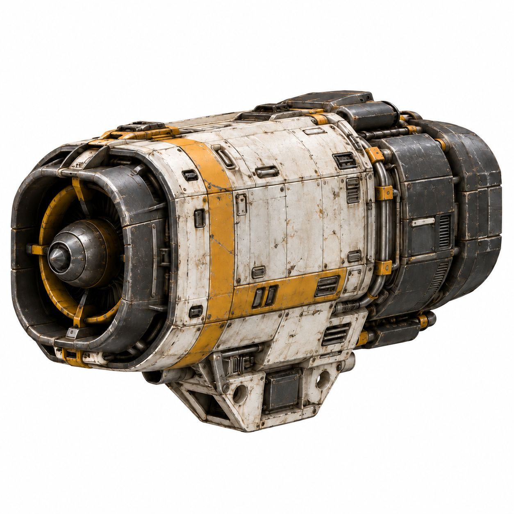
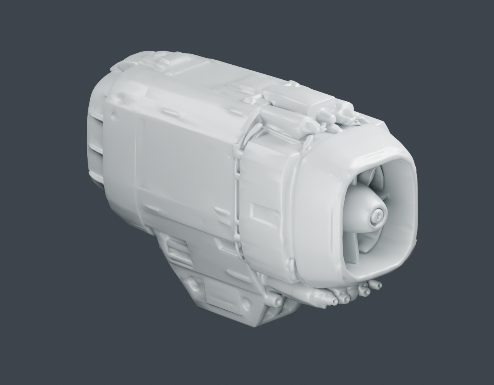

Kestrel drive / artwork-to-mesh review
One isolated engine module generated locally with TripoSG, then cleaned and rigged in Blender. Inspect the shape from multiple directions before approving it for a ship. The neutral material exposes geometry; this is not a finished textured asset.

Input artwork — single module, isolated background.

Blender quarter — actual mesh, neutral inspection material.